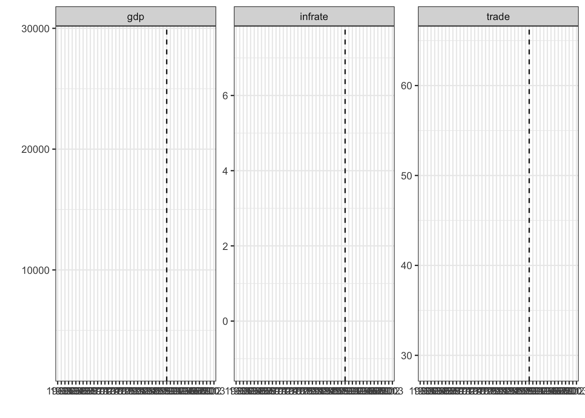

install.packages("devtools")The multisynthdid package
FIRST BETA VERSION
All comments are more than welcomed! Please submit them to the issues section here: https://github.com/regulyagoston/multisynthdid/issues
Multiple outcome Synthetic Difference-in-Differences
Allows to use multiple outcomes in Synthetic Diff-in-Diffs estimation. Implements the synthetic difference-in-differences estimation proposed by Chava and Reguly (2024): The Long-Run Stock Market Performance of Mergers and Acquisitions The package extends Arkhangelsky et al (2021) to multiple outcomes, while optimizing the weights over multiple variables.
How is it different from classical Synthetic Diff-in-Diffs
Arkhangelsky et al (2021) introduces synthetic control that allows time and unit fixed effects while creating ‘’synthetic control’’ for the (expected) treated unit.
Other Synthetic Control methods allows to use ‘’covariates’’ that they use to calculate the weights. Note however these variables are unaffected by the treatment. Nice paper on the issue is by Botosaru and Ferman (2019).
Here we allow to estimate the weights for the control donor pool by using multiple outcome that are affected by the treatment. We also allow pre-event time specific weights that reduces the bias in the estimator.
\[ \hat Y_{it}(1) = \sum_{i'} \omega_{i'} Y_{i't} - \hat \delta _{pre} \]
\[ \hat \delta_{pre} = \sum_{t=1}^{T_{pre}} \left( \hat\lambda_{t}Y_{i,t} - \sum_{i'} \hat \omega_{i'} \hat\lambda_{t} Y_{i't}\right) - \hat\lambda_{0,i} \]
where the individual unit-weights \(\omega_{i'}\) and the pre-treatment time weigths \(\lambda_{t}\) are estimated by using multiple outcomes. Their optimal values are the solution of the following optimization problem:
\[\hat\omega_{i'} = \left( \hat\omega_0^K, \hat\omega_{i'} \right) = arg\min_{\omega_0\in \mathbb{R}, \omega \in \Omega} \sum_{t=1}^{T_{pre}} \left[ \Big(\omega_0 + \sum_{i'} \omega_{i'} Y_{i',t} - Y_{i,t} \Big)^{'} \hat \Sigma_t^{-1} \Big( \omega_0 + \sum_{i'} \omega_{i'} Y_{i',t} - Y_{i,t} \Big) \right] + \zeta^2 T_{pre} \sum_{i'}\omega^2_{i'}\]
and
\[ \left( \hat\lambda_0, \hat\lambda \right) = arg\min_{\lambda_0 \in \mathbb{R}, \lambda \in \Lambda} \sum_{i'} \Bigg[ \left(\lambda_0+\sum_{t=1}^{T_{pre}}\lambda_{t} Y_{i',t} - \frac{1}{T_{post}}\sum_{t=0}^{T_{post}} Y_{i',t}\right)^{'} \hat{\Sigma}^{-1} \left(\lambda_0+\sum_{t=1}^{T_{pre}}\lambda_{t} Y_{i',t} - \frac{1}{T_{post}}\sum_{t=0}^{T_{post}} Y_{i',t}\right) \Bigg]\]
where \(Y\) is \(J \times T\), \(i\) is the treated units and \(i'\) are the controls and during the optimization we constraint both weights to sums up to 1. See more in Chava and Reguly (2024)
Intuitively it uses information from \(J\) outcome and calculate unit specific weigths \(\omega_{-i}\) that minimize the Mahalanobis distance from the treated (average) unit, where the scaler is coming from time specific var-covar matrices. Similarly to Arkhangelsky et al (2021) we add a (ridge-style) penalty term that shifts weights toward zero.
For the time specific weights we use the same approach but scale with unit-specific var-covar matrices.
Usage
Installation
To install this package, first ensure that devtools is installed with
then install the package from GitHub with
devtools::install_github("regulyagoston/multisynthdid")Example with German Reunification Data
A simple example is to estimate the effect of German Reunification.
library(multisynthdid)Get the imputed data for German reunification.
data("german_reunification")One can easily run the estimation via the main function:
res <- multi_sdid( gdp + infrate + trade ~ 1, 'W', 'country', 'year', german_reunification )The summary command will summarise the main estimates
summary.multisynthdid(res)$estimate
[1] "multi_synthdid_obj"
$tau
gdp infrate trade
Avg. Treatment -1526.459 1.397776 0.3985817
SE 1426.881 1.520277 4.4136682
$dimensions
[,1]
No. Treated units 1.000
No. Control pool 16.000
Effective no. controls 8.668
No. Post-treatment periods 14.000
No. Pre-treatment periods 30.000
Effective no. pre-treatment periods 1.000
No. Outcomes 3.000To check the outcome variables and its synthetic counterparts visual investigation has been the norm with synthetic controls.
plot_outcomes( res )`geom_line()`: Each group consists of only one observation.
ℹ Do you need to adjust the group aesthetic?
`geom_line()`: Each group consists of only one observation.
ℹ Do you need to adjust the group aesthetic?
`geom_line()`: Each group consists of only one observation.
ℹ Do you need to adjust the group aesthetic?
Finally one can check the treatment/gap plots with ot without placebo effects for inference.
plot_gaps( res, placebo = T )Comparison to other methods
We have compared our method to other synthetic control methods.
One benchmark is the univariate synthetic difference-in-differences. See more here.
The other alternative is other synthetic control packages that can handle multiple outcomes or can estimate weights based on multiple (co)variates. See more here.